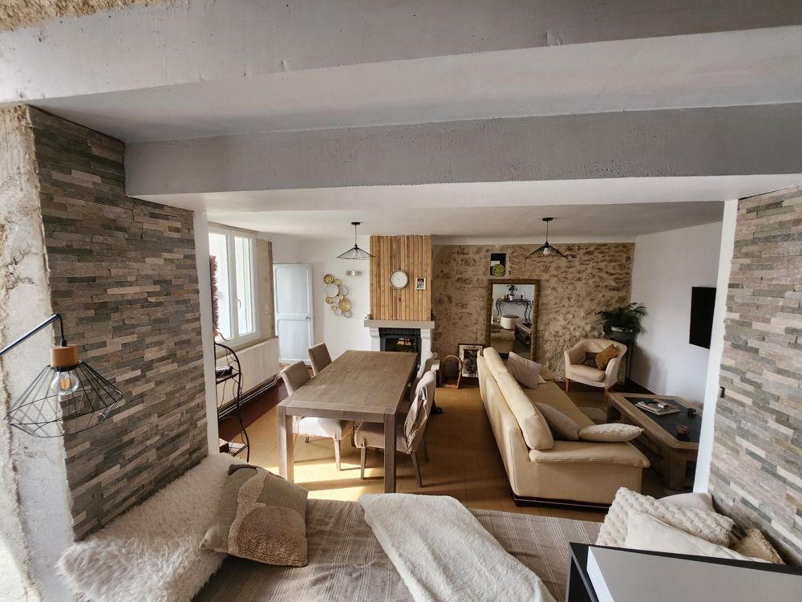
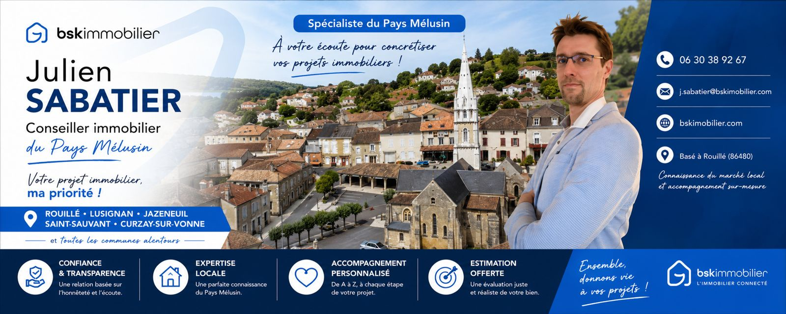
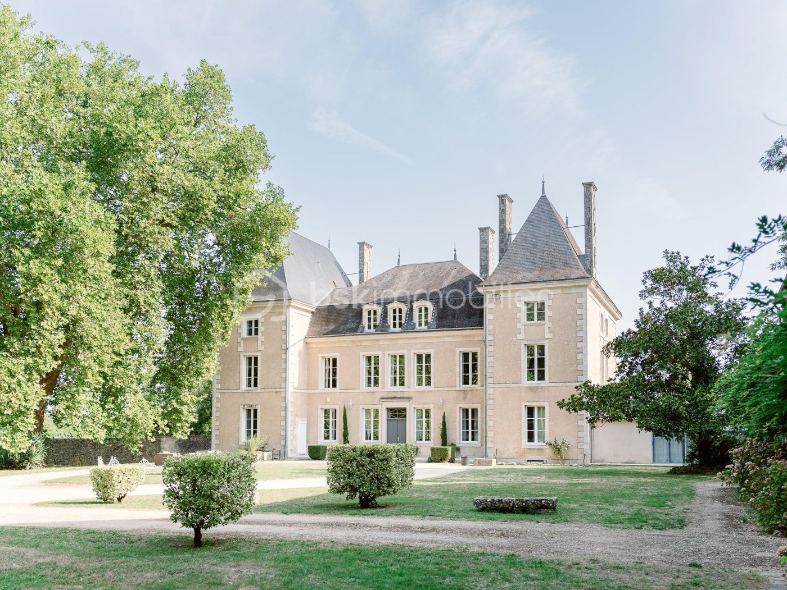

Julien Sabatier
BSK Immobilier, Rouillé et alentours
Gratuit, sans engagement
Estimer ma maisonEstimation gratuite de votre maison en 2 minutes
Quelques questions, une fourchette de prix tout de suite. Je l'affine ensuite avec vous.
Conseiller immobilier BSK · Rouillé, Lusignan, Saint-Sauvant, Curzay-sur-Vonne
Le voisin mandataire qui vend vos biens où il vit.
Je suis Julien Sabatier, mandataire BSK Immobilier à Rouillé. Je connais les rues, les hameaux et les acheteurs du coin. Votre bien est diffusé sur plus de 30 portails, avec une vidéo et des images de drone quand il s'y prête.

14 ans d'expérience immobilière

Mes biens à vendre
Annonces synchronisées avec ma page BSK. Chaque fiche renvoie vers l'annonce complète.
Annonces mises à jour le 19 novembre 2026, d'après ma page BSK.



Bien d'exception · Benest (16)
Château de la Borderie, domaine de réception
Château de 716 m², 23 pièces, 16 chambres, 1,77 ha de terrain, au sein d'un domaine de 18 hectares. Exploité depuis 2016 comme domaine de mariage, cédé meublé avec son fonds de commerce et les réservations en cours.
2 088 000 € honoraires à la charge du vendeur · Réf. 352671
Gratuit, sans engagement
Combien vaut votre maison à Rouillé ou Lusignan ?
Répondez à quelques questions : type de bien, surface, chauffage, salles de bain, orientation, environnement. Vous obtenez une fourchette de prix, que j'affine ensuite avec vous.
- Résultat immédiat à l'écran
- Ma plaquette de conseils pour bien vendre, par mail
- Je vous recontacte uniquement si vous l'avez accepté
Estimation en 2 minutes
Type de bien, surface, chauffage, salles de bain, orientation, environnement : vous obtenez une fourchette de prix, que j'affine avec vous.
Lancer mon estimation gratuiteLe marché autour de Rouillé
1 082 €le m² médian à Rouillé (maisons, 2021 à 2025)
1 217 €le m² médian à Lusignan (maisons, 2021 à 2025)
23maisons vendues par an à Rouillé en moyenne, de 2021 à 2025
Source : DVF (data.gouv.fr), maisons vendues seules, données arrêtées au 31/12/2025.
Un voisin au bout du fil
Je vis et je travaille ici. Je connais les rues, les hameaux et les acheteurs du coin.
Une diffusion large
Votre annonce est publiée sur plus de 30 portails grâce aux outils BSK.
Vidéo et drone
Je filme l'intérieur, l'extérieur et, quand le bien le justifie, des vues aériennes.
Parlons de votre projet
06 30 38 92 67 · contact@jsabatier-immo.fr